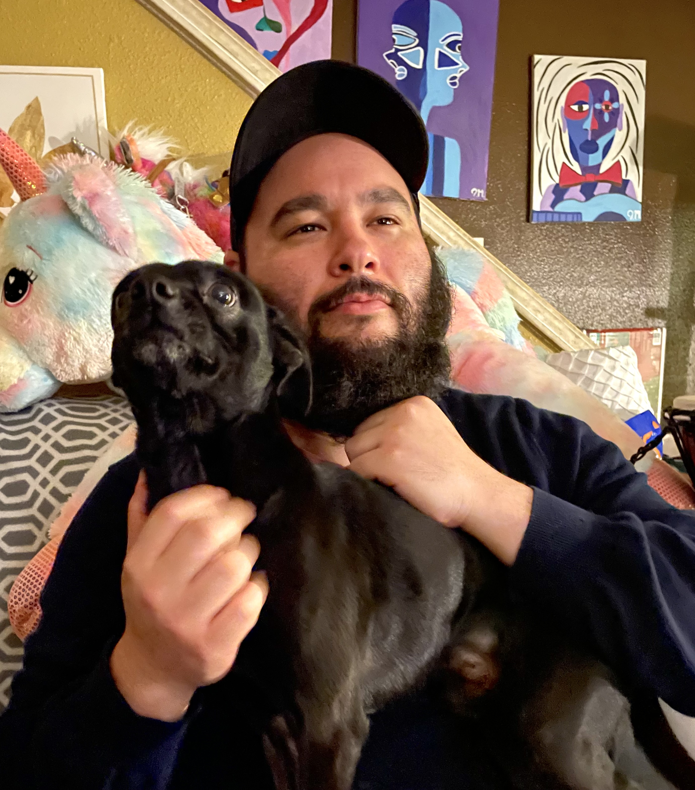

Jesse Cordova

Summary
I am a friendly and easy going person who is seeking a full time job with
good company that would appreciate someone with the heart of a
professional. I have a hard working attitude and love to learn new
things. I pride myself on being teachable and coachable. My goal is to be
able to grow with a company and expand my knowledge, I'll always go above
and beyond to ensure that I am doing my part to meet the needs of the
company.
Education
High School Graduate, Homer Hanna High School
Years active: 2006-2010
Work experience
Truesource -
Position: Maintenance Dispatcher.
Period of service: October 2021 - Current job.
Assignments: Dispatching and resolving maintenance tickets for
comemercial companies.
Job Duties: Finding local mainternance workers to resolve trouble
calls for commercial companies.
Corestaff -
Position: Adjudicator, Lead adjudicator.
Period of service: March 2021 - September 2021.
Assignments: Unemployment Claims Adjudicator.
Job Duties: Researching and responding to written and telephone
inquiries from customers regarding unemployment claims status, program
requirements, and procedures.
Liberty Mutual -
Position: Licensed insurance agent.
Period of service: October 2020 - March 2021.
Assignments: Selling Home, Auto and PLP policies.
Job Duties:Finding needs as well as building customer rapport to
better assist the customer with purchasing their Home, Auto and PLP
Policies.
Charter Communications -
Position: Sales representative.
Period of service: March 2017 - October 2020.
Assignments: Sell and upsell cable products to new and existing
customers.
Job Duties: Finding needs as well as building customer rapport to
better assist the customer purchase home cable services.
Lobo telecommunications -
Position: Field cable technician.
Period of service: February 2016 - March 2017.
Assignments: Installing cable for Time warner cable services.
Job Duties: Traveling to customers homes to wire and set up their
cable, internet and home phone services.
Lowes -
Position: Shipping, receiving, stocking.
Period of service: October 2014 - January 2016.
Assignments: Unloading and stocking merchandise.
Job Duties: Unloading and stocking freight onto the sales floor.
Central Bold and Industrial Supplies -
Position: Customer sales, stocking, and delivery driver.
Period of service: September 2013 - April 2014.
Assigments: Over the counter sales, shipping and receiving,
Delivery driver.
Job Duties: Assisting customers with over the counter sales.
Receiving incoming merchandise, as well as stocking merchandise.
Delivering orders to clients.
Convergys -
Position: Customer Service Representative
Period of service: August 2012 - September 2013.
Assignments: Technical support.
Job Duties: Troubleshooting any and all isseus customers have with
their cable services.
Teleperformance -
Position: Customer Service Representative, Technical Support.
Period of service: August 2011 - May 2012.
Assignments: Technical support for Sprint mobile services.
Job Duties: Troubleshooting customers mobile devices to resolve
issue with their mobile phones and service.
Central Bolt and Industrial Supplies -
Position: Customer sales, stocking, and delivery driver.
Period of service: September 2010 - May 2011.
Assignments: Over the counter sales, shipping and receiving,
Delivery driver.
Job Duties: Assisting customers with over the counter sales.
Receiving incoming merchandise, as well as stocking merchandise.
Delivering orders to clients.
Skills
Multitasking.
Can properly opperate a forklife, reach and order picker.
Can type 60 words per minute.
Photography.
Proficent in Microsoft word.
About Me
My hobbies.
Contact me.